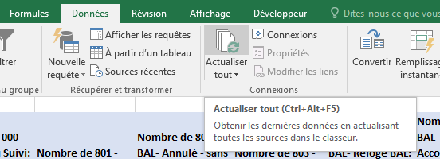

Exemples Pratiques d'Excel
Exemples Rapides
Exemples SOLiHA
Budget Personnel
Dans cet exemple, nous allons voir comment utiliser les formules et les tableaux croisés dynamiques pour traiter les données de votre budget personnel. L'exemple est réalisé avec l'aide du site Mockaroo qui permet de générer des données aleatoires en paramétrant les colonnes.
Étape 1: Préparation des données
1. Création des données :

On a créé 300 lignes de données. On retrouves les colonnes suivante :
- id (valeur itérative automatique);
- lieu (des noms de lieux générés aleatoirement);
- date (des dates générée aleatoirement en format dd/mm/yyyy);
- categorie (une liste de différentes catégories précisées sur l'image);
- prix (des prix générés aleatoirement allant de 5 à 120 avec 2 décimales possibles);
- quantite (une quantité aleatoire allant de 1 à 10);
- description (des descriptions générées aleatoirement);
- nom_magasin (des noms de magasins générés aleatoirement);
- moyen_payement (une liste de moyens de paiement prédefinis dans l'image).
Une fois les données préparées, nous pouvons ouvrir le fichier pour visualiser la structure des données. On peut remarquer également que nous avons une seule feuille qui porte le nom data.
2. Visualisation des données :

On voit alors que la structure des données est e naccord avec ce qu'on a paramétré sur Mockaroo.
Étape 2 (facultative): Utilisation des filtres sur les en-tête de colonnes
Pour mieux visualiser ou simplement trouver une ou plusieurs valeur(s) qui nous intéresse(nt), on peut utiliser les filtres pour faire ressortir seulement les données voulues.
Sélectionnez la ligne 1 du fichier pour sélectionner toute la ligne et cliquez sur Filtrerdasn le menu déroulant Trier et filtrer de l'onglet Accueil.

Disons que nous voulons afficher seulement les achats faits avec une carte bleue. Cliquez alors sur la flèche correspondant a la colonne moyen_paiement.

Maintenant, si nous voulons trier les achats qui ont été fait par carte bleue au mois de Juillet 2021, nous pouvons très bien utiliser le filtre de la même manière, mais l'opération est juste trop longue et l'exécution comporte trop de risque d'oublis.
Étape 3: Utilisation des formules pour créer de nouvelles colonnes
1. Création de colonnes "mois", "annee"
Donc, pour reprendre l'exemple ci-dessus, on va ajouter une colonne mois et une colonne annee. On a besoin de créer de nouvelles colonnes pour pouvoir travailler sur les données. Il est important de toujours faire attention à l'ordre des colonnes pour la structure de votre fichier, qu'elle soit cohérente avec le traitement que vous faites. Pour ça, on va faire un clic droit sur la colonne à droite de date (donc la colonne D) et choisir Insertion. On répète l'opération 1 fois pour annee.

2. Utilisation des formules
Il faut penser à bien réinitialiser les filtres quand vous utilisez des formules qui font références à d'autres cellules et que vous étirez cette même formule.
Une fois nos 2 colonnes créées, on peut alors utiliser les formules =MOIS() et =ANNEE() pour les colonnes mois et annee.
Dans la ceullule C2 (colonne mois), on a bien la formule :
=MOIS(C2)
De la même manière pour l'année, dans la cellule E2, vous aurez :
=ANNEE(C2)
Vous pouvez alors passez votre souris dans le coin bas droit de la cellule C2 pour faire un double clic gauche pour étendre la formule sur toute la longueur du tableau. Vous pouvez également faire de même avec la cellule E2.

Pour faire apparaitre seulement les achats de juillet 2021, par carte bleue, on peut réappliquer le filtre sur la colonne moyen_paiement et appliquer les filtres 7 et 2021 pour les colonnes mois et annee respectivement.
On a alors le rendu suivant:

Étape 3: Analyse des données avec des tableaux croisés dynamiques
Les tableaux croisés dynamiques sont très utiles pour faire ressortir très vite les données dans un tableau croisé.
Pour l'exemple, nous allons créer un nouvel onglet qui permettra de tracer les tables croisées dynamiques plus facilement.
Cliquez sur le ➕ à côté de l'onglet data pour ajouter un nouvel onglet. On lui donnera le nom traitement

Pour insécrer un tableau croisé dynamique, nous allons cliquer sur une cellule vide pouvant accueillir le tableau, aller dans l'onglet Insertion, et cliquer sur Tableau croisé dynamique. Dans le champs Choisissez les données à anlyser, nous allons sélectionner l'ensemble de nos données (nom filtrées) de l'onglet data et cliquer sur OK.
Une fois inséré, vous pouvez cliquer dessus et insérer les champs nécessaire à votre traitement.pour l'exemple, nous allons insérer en ligne, les valeur du champs mois, en colonne, les valeurs du champs moyen_payement et en valeurs, nous allons choisir les valeurs du champs id. De cette manière, les achats seront répartis en fonction du moyen de paiement et affichés par mois.
Si jamais les données contenues dans dans data devaient changées à l'avenir, il nous suffirait d'aller sur ce nouvel onglet et actualiser les données pour visualiser à nouveau le traitement.
Voici à quoi ressemblerait ce tableau:

On peut également, si souhaité, faire apparaitre seulement certaines valeurs en fonction du tableau croisé dynamique en filtrant les données des champs, ou simplement en cliquant sur une des valeurs contenues dans les cellules du tableau crosié dynamique. Les valeurs seront affichées dans un nouvel onglet automatiquement. Voici un exemple:

Étape 4: Traitement des dépenses par mois
On peut ajouter un nouveau tableau pour mettre en valeur les dépenses par mois.
Pour vous faciliter la tâche, vous pouvez simplement copier le précédent tableau croisé dynamique et le coller dans un emplacement capable d'accueillir le nouveau tableau. Ca aura pour effet de copier la source des données. Donc ça évite de devoir ré-insérer un nouveau tableau et resélectionner les données à traiter à nouveau.
Même si, pour le traitement on va voir qu'on va vouloir changer la source des données puisqu'on veut rajouter une colonne qui calculera la quantité * le prix. On va donc seulement insérer une nouvelle colonne et nommer l'en-tête total_depenses.
On va vouloir insérer ce calcul dans la cellule I2 de la colonne total_depenses :
=G2*H2
Il faut vous assurer que la source des données est bien conforme. Il faut prendre l'entiereté des données de l'onglet data et notamment la colonne que nous venons d'insérer total_depenses.
Pour ça, nous allons devoir cliquer dasn le tableau croisé dynamique et Actualiser les données depuis l'onglet Analyse pour vérifier que dans les champs possibles à afficher on voit bien total_depenses.

Si le champs n'aparait pas, nous devons alors Changer la source des données depuis l'onglet Analyse pour sélectionner toutes les données de la feuille data.
Il ne vous manque plus qu'à affecté les champs au tableau croisé dynamique. On va vouloir mettre en ligne le champs mois et en valeurs le champs total_depenses. Assurez vous surtout que ce soit la somme des valeurs qui soit sélectionnée et non le compte. Vous pouvez le modifier en faisant un lcic droit dans la colonne concernée et sélectionner paramètres des champs de valeurs....

Vous pouvez toujours approfondir d'autant plus ces données en faisant différents traitement sur les champs disponibles ou en faisant apparaitre d'autres tableaux croisés dynamiques ou encore des graphiques, etc.
Je vous laisse la possibilité de télécharger le projet ici.
Combiner des Données de Plusieurs Sources
Dans cet exemple, nous allons voir comment combiner deux jeux de données en utilisant des formules de recherche dans Excel. Cela nous permettra d'enrichir notre analyse en ajoutant des données supplémentaires provenant d'une table liée.
Étape 1 : Préparation des Jeux de Données
Comme pour le premier exemple, nous allons utiliser le site Mockaroo qui nous permet de génrer des données à partir de crières imposés. Il faudra néanmoins retravailler les données pour •qu'elles puissent être liées (ajuster les clés primaires et secondaires).

Nous allons utiliser deux jeux de données :
- Jeu de Données 1 (Ventes) : "produits_vente.xlsx" Contient des détails de ventes incluant un identifiant produit.
- Jeu de Données 2 (Produits) : "produits_infos.xlsx" Contient des détails des produits que nous allons lier aux ventes en utilisant l'identifiant produit.
Nous obtenons pour cet exemple ce genre de jeu de données, dans 2 fichiers Excel distincts.

Étape 2 : Utilisation des Formules de Recherche
Admettons que les données présentées ici sont des export issus de logiciels métiers que nous utilisons régulièrement. Nous avons besoin de faire en sorte que ces données soient exploitables le plus facilement possible. Pour ce faire, nous allons utiliser des formules qui lieront les tables entre elles.
Comme on retrouve les mêmes identifiants dans les 2 datasets "id_produit", on va pouvoir les lier entre eux en utilisant la formule =RECHERCHEV().
Nous allons utiliser la formule =RECHERCHEV() pour récupérer les détails des produits et les ajouter à nos données de ventes. Suivez ces étapes :
- Insérez de nouvelles colonnes dans le Jeu de Données 1 pour les détails des produits (nom_produit, categorie, stock_disponible,...).
- Utilisez la formule
RECHERCHEVdans les nouvelles colonnes pour récupérer les données du Jeu de Données 2.
Exemple de formule pour ajouter le nom du produit :
=RECHERCHEV(B2;[produits_infos.xlsx]Feuil1!$A$1:$F$38;2;FAUX)

- B2 : valeur recherchée. On pourrait bloquer la colonne en ajoutant un $, ça donnerait $B2
- [produits_infos.xlsx]Feuil1!$A$1:$F$38 : plage de cellules ciblée pour la recherche
- 2 : position de la colonne cible
- FAUX : valeur par défaut
En répétant cette étape pour les colonne catégorie et stock_disponible on obtient le résultat suivant :

Étape 3 : Analyser les Données Combinées
Disons que nous voulions faire apparaitre les ventes totales pour chaque categorie de produits.
Il va nous falloir une nouvelle colonne sur notre dataset principal : total_vente qui prendra la quantite * prix_unitaire.

Maintenant, nous voulons créer un tableau croisé dynamique pour faire apparaitre les ventes totales par categorie en fonction du moyen de paiement utilisé. Je la nommerai "traitement. On suit alors les étapes suivante pour créer et insérer le tableau croisé dynamique et ses champs :
- Insérer le tableau croisé dynamqie dans une cellule de la feuille traitement.
- Prenez l'ensemble du dataset de votre feuille data. Il est recommandé de prendre un peu plus large pour que, si vous ajoutez de nouvelles lignes, vous n'ayez à changer la source des données. Attention ! Vous ne pourrez pas sélectionner des en-têtes vides puisque le tableau croisé dynamique ne pourra pas proposer de champs associés.
- Appliquez les champs dans le tableau croissant dynamique.
- En colonne : moyen_paiement
- En ligne : categorie
- En valeur : total_vente (attention à bien changer dans les paramètres du champs d'afficher par "somme" et non pas par "nombre").
Vous devriez avoir un rendu tel que :

Etape 4 : insertion de filtre sur le tableau croisé dynamique
Dans cette partie, notre objectif est de faire appraitre les ventes totales par catégorie en fonction du moyen de paiement tout en triant par mois
Pour ce faire, nous allons insérer une nouvelle colonne à coté de date_vente. De cette manière, on pourra utiliser la formule =MOIS() pour récupérer le mois de date_vente.
=MOIS(G2)

On peut alors retourner sur notre onglet traitement pour insérer le champs mois_vente dans le champs lié aux filtres du tableau croisé dynamique. Pour l'exemple on va sélectionner le mois de Juillet, donc dans la liste déroulante du filtre, on sélectionne le 7.
Pensez à bien actualiser les données pour faire apparaitre tous les champs dans la liste des champs, et notamment ici "mois_vente" que nous venons d'ajouter.
Votre tableau croisé dynamqie devrait ressembler à ça :

Concrètement, ce que nous indique ce tableau c'est :
- En Juillet (peu importe l'année), on a un total 571,93 de valeur de vente en comptant tout les moyens de paiement et toutes les catégories.
- Aucune vente comptabilisée par chèque au mois de Juillet (peu importe l'année)
- La catégrorie de produit qui se vend le mieux au mois de Juillet (peu importe l'année) est "les Accessoires"
Pour affiner ce tableau encore plus sur une année précise, on peut tout à fait refaire ce que nous avons fait pour la colonne (et champs) mois_vente. Voici ce que ça donnerait pour le mois de Juillet de l'année 2023 :

Donc depuis ce tableau, on peut utiliser les filtres selon nos besoins pour faire ressortir une année particulière ou un mois particulier ou les 2.
Etape 5 : Insertion d'un segment
Il peut être pratique d'avoir une interface utilisateur plus facile pour appliquer des filtres surtout pour une durée. C'est là que le filtre chronologique ou le segment entre en jeu.
Pour pouvoir insérer un segment, on va établir un nouveau tableau croisé dynamique qui montrera la somme des stocks disponibles en fonction de l'année sur tout les produits confondus.
Voici ce que donne ce tableau :

Pour insérer un segment, on clique sur Insérer un segment depuis l'onglet Analyse après avoir cliqué sur le tableau croisé dynamique. Puis, on choisit annee_vente.

On se retrouve avec un segment qui ressemble à une fenêtre volante qui nous permet de chosiir l'année ou l'intervalle d'année que l'on souhaite voir. Pour réinitialiser le segment, on clique sur le bouton 
Voici ce qu'on doit avoir pour l'affichage pour la tranche d'années 2021 à 2023 :

Le segment fait office de filtre plus interactif qu'un filtre plus classique.
Etape 6 : Récupération des données depuis un TCD
Les tableaux croisés dynamiques peuvent, si beaucoup de données lui sont liées devenir une usine à gaz et complexifier l'interprétation de ceux-ci. Il est possible de reprendre seulement les donnée importantes que l'on souhaite faire apparaitre pour alimenter un nouveau tableau ou insérer le résultat dans une cellule. On peut également utiliser la référence via des formules etc.
Pour cette nouvelle étape on va faire apparaitre un nouveau tableau croisé dynamique. Il montrera la proportion totale des ventes par catégorie. Avec une ligne intermédiaire pour afficher le détail des dates de vente. Voici à quoi ressemblerait ce nouveau TCD :

Dans notre exemple, on sait déjà facilement quelle va être la proprtion sur chaque catégorie comme le dataset est sur un total de 100. Mais nous allons quand même montrer comment on peut utiliser les références des données du tableau croisé dynamique.
Pour l'exemple, nous voulons la proportion de la catégorie "Accessoire". Pour ce faire, nous allons rentrer la cellule suivante :
=LIREDONNEESTABCROISDYNAMIQUE("total_vente";$C$5;"categorie";"Accessoires ")/LIREDONNEESTABCROISDYNAMIQUE("total_vente";$C$5)
On prend la valeur correspondant à la catégorie Accessoires et on la divise par le total des ventes. Puis, on change le format de cellule de Standard à Pourcentage. Quand on fait nos formules, on va simplement cliquer sur la cellule qui contient la valeur que l'on souhaite utiliser pour y faire référence.
Petite précision : la fonction =LIREDONNEESTABCROISDYNAMIQUE() est automatiquement actualisée à chaque actualisation du tableau croisé dynamique.
Vous devriez avoir ceci :

Vous pouvez tout à fait faire des calculs plus complexes, tout en mêlant des valeurs récupérées depuis d'autres TCD.
Je vous laisse la possiblité de télécharger le projet ici et l'autre fichier Excel qui sert de liaison ici
Utilisation de Solidata


Introduction à Solidata
Solidata est un outil d'Intrados qui permet consulter les et traiter les données des différentes strates. Il est possible de le télécharger sur votre espace Intrados via l'icone Mes Outils en sélectionannt ensuite Solidata.
Actuellement, la version est la 5.1.2, mais les versions précédentes, notamment la version 3.0.6 fonctionne également.
Cet outil est directement connecté à la base de données Intrados et donc s'actualise via le bouton Actualiser les données de l'onglet Accueil.
Premiers pas sur Solidata
Il vous faut déjà cliquer sur Activer le contenu pour pouvoir utiliser les différentes fonctionnalités de Solidata.

Avant toute chose, il sera nécesaire d'Actualiser les données en cliquant sur le bouton correspondant. Sélectionner ensuite la strate voulue pour votre projet. Il est important de noter que le choix de strate est définitif. Si vous voulez faire un rapport sur une autre strate, il faudra utiliser un nouveau fichier Solidata
Pour notre exemple, nous allons choisir la strate Dossier pour les dossiers travaux
Pour la suite, vous devez séctionner différents paramètres. Du filtre de données à appliquer aux Produits en passant par la Période. Vous pouvez changer ces paramètres à tout instant en passant par le même bouton Actualiser les données.

Selon votre projet, vous aurez à sélectionner plusieurs produits. Vous pouvez ensuite cliquer sur le bouton Créer un rapportpour continuer le paramétrage de votre projet.


L'étape de paramétrage de la dernière image vous demande de sélectionner les différentes en-têtes de colonne pour l'afichage de votre rapport. Ce n'est pas grave de sélectionner plus de champs que seulement le nécessaire. Si, toutefois, vous choisissez de ne prendre les champs qui sont seulement nécessaires, vous pourrez à tout moment modifier cette étape via le même bouton sur l'onglet Accueil.
Pour notre exemple, je vais tout sélectionner sur un produit pour qu'on ait un rapport le plus complet pour ce même produit. Le dataset, une fois généré, aura besoin d'être nommé, puis sera intégré à un nouvel onglet.

Traitement des données
Une fois que vous avez votre dataset, vous pourrez alors commencer à traiter les données à l'aide de tableaux croisés dynamiques. Vous pouvez les intégrer dans un nouvel onglet pour que ce soit plus lisible.
Dans ce nouvel onglet, nous allons simplement insérer un tableau croisé dynamique à l'endroit que vous voulez et sélectionner l'intégralité du dataset pour commencer votre traitement.
Astuce : Lors de la sélection des données à l'insertion d'un TCD, vous pouvez sélection plus facilement les données en cliquant sur la première cellule en haut à gauche et en maintenant les touches Ctrl+Shift et en appuyant sur les flèches directionnelles droite et bas, vous sélectionnerez l'intégralité du dataset.

Une fois que vous avez créer votre tableau croisé dynamique, vous pouvez sélectionner dans la liste des champs de votre tableau croisé dynamique des chmps adéquats à votre rapport.
Pour l'exemple, on va créer un tableau croisé dynamique nous permettant de mettre en valeur le nombre de dossiers en fonction de leur Staut. Pour ce faire, nous allons dans la liste des champs du TCD, sélectionner Code Dossier(qui est l'id d'un dossier) qu'on met en valeur, Statut Dossier qu'on met en lignes. Vous obtiendrez alors un résultat similaire à :

Vous pouvez, de cette manière créer de nouveaux TCD pour votre rapport.
Astuce : Pour optimiser les ressources d'Excel, vous pouvez simplement sélectionner un tableau croisé dynamique existant et le copier pour le coller à l'endroit souhaité. Plutôt ue de passer par l'onglet Insertion > Insérer un tableau croisé dynamique.

Pour traiter certaines données, vous aurez peut être besoin de calculer des valeurs à l'aide de formules. L'espace Cours répertorie en partie, des formules pratiques qui vous permettront de traiter à biens vos données.
On peut même imaginer des graphiques dynamiques ou bien des filtres chronologiques ou segments pour trier plus visuelment des tableaux/graphiques croisés dynamiques.
Voici quelques exemples :


Réutilisation de Solidata et exploitation des données
Une fois que votre rapport est complet. Vous pouvez simplement sauvegarder le rapport pour le consulter traité et à jour ultérieurment.
Il faudra seulement actualiser les données via le bouton Actualiser les données dans l'onglet Accueil. Sélectionner la bonne tranche horaire et valider.
Une bonne pratique pour le traitement via des tableaux/graphiques croisés dynamiques c'est d'actualiser les données via l'onglet Données.
